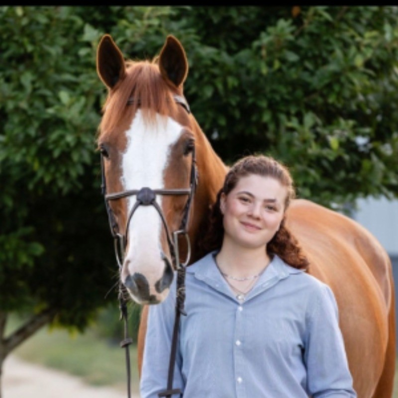
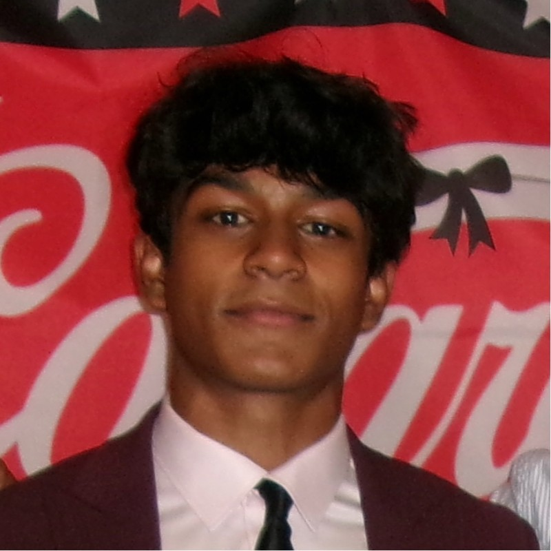
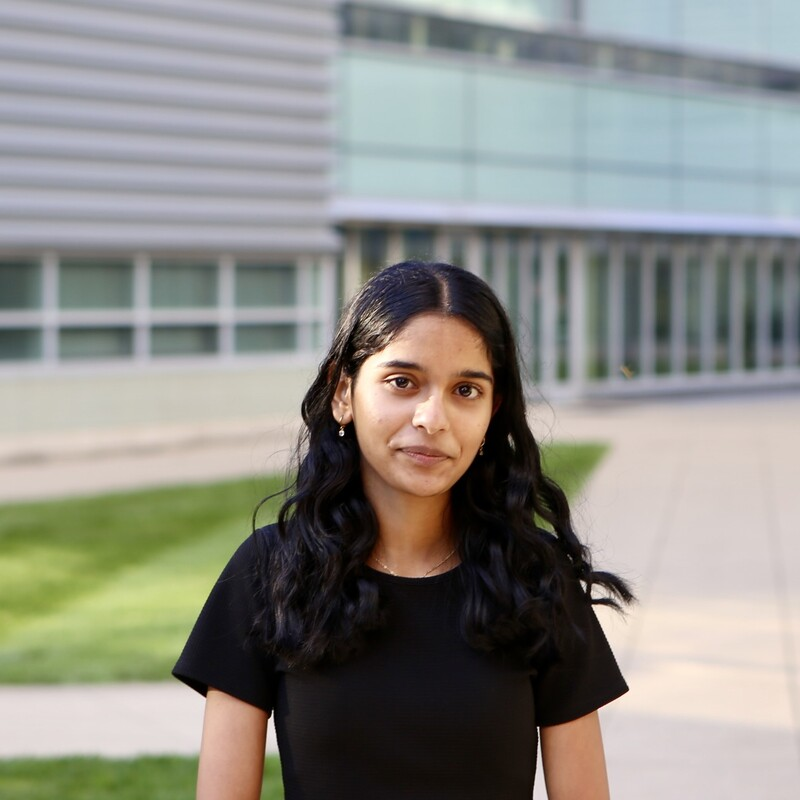

The People Behind Nutrigain
Four Ohio State University students on a mission to make campus dining smarter, healthier, and stress-free.

Focused on user research, concept development, and product strategy. Led the competitive analysis and business model canvas development.
View Profile →
Developed the revenue model, market sizing (TAM/SAM/SOM), and institutional licensing strategy. Led market research and stakeholder analysis.
View Profile →Designed the user experience flows, wireframes, and hi-fi mockups. Conducted user interviews and synthesized insights into actionable requirements.
View Profile →
Led the technical architecture, prototype planning, and API integration strategy. Key contributor to the detailed design documentation and system flow.
View Profile →Our Approach
Every decision is grounded in real student needs. We interviewed university students across multiple campuses to validate our assumptions before building.
Formal concept screening matrices, pairwise comparisons, and weighted scoring kept our decisions objective and rigorous.
We explored 6 concepts before selecting the best 2. Failing fast through structured evaluation helped us build the right thing.
User Validation
"Finding the calorie details is a big pain...You'd have to go through and individually find each item on the nutrition website."
— Student Interviewee, The Ohio State University
"I don't always know what's gonna be the fastest to eat...I just didn't know where to go."
— Student Interviewee, The Ohio State University
"I can get something, but it's a problem that I can't be healthy without making it a hassle."
— Student Interviewee, The Ohio State University
"Our dining app shows what's open but nothing about nutrition or wait times. I'd use something like this every single day."
— Student Interviewee, Cornell University
"Between back-to-back classes, I barely have time to figure out what to eat. I need something that just tells me where to go and what fits my macros."
— Student Interviewee, Carnegie Mellon University
"The allergy info is buried so deep in the dining website. I just avoid certain halls entirely because I can't risk it."
— Student Interviewee, Cornell University